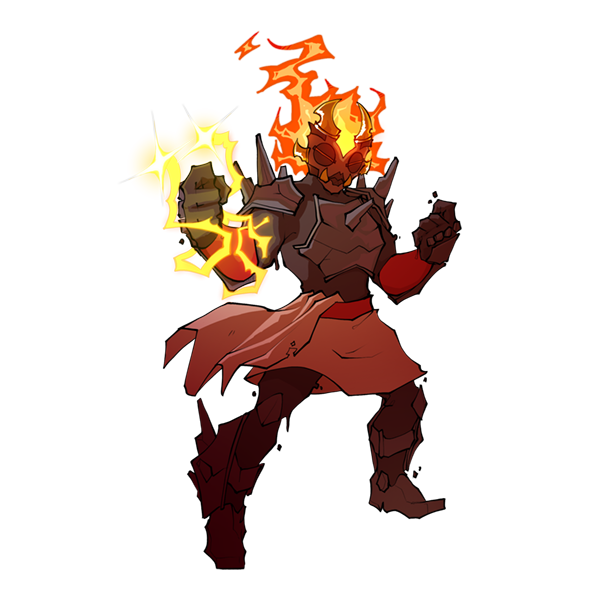

Mancer is work in progress card game! I don't actually have a title for it yet, but I've been calling it Mancer. I don't really like the name, but I need one, so whatever.
I'll update this page as development continues, but here's some creature images and descriptions to tide you over!
 |
 |
 |
| Arboran
Art by Ferjo404. |
Pisceran
Art by Ferjo404. |
Gaean
Art by Ferjo404. |
| The arboran is a manifestation of pure growth mana. They live in forests, always in constant search of new experiences. They have a rather cold and bleak outlook on life. |
The pisceran is a manifestation of pure flow mana. They live in the oceans, drifting from one place to another. They have no particular goal in mind, they simply exist as they are. |
The gaean is a manifestation of pure heat mana. They live in the mountains, where they live in solidly structured societies. They tend not to value individualism, opting for complete devotion to their society. |
Ain't that interesting? Well, there are more creatures to come, so stay tuned for that! Now, how about some characters?
|
|
| Mag, the witch
Art by Hamberry. |
The Lady in Purple
Art by Hamberry. |
| Mag is a dark elf witch. She lives on the Turtle Isles, but likes to spend her time sailing when not at home. As a dark elf, she is hated by other humans. Despite that, she still loves the thrill of adventure and seeks it out when she can. |
The Lady in Purple is an ancient arboran who lives a reclusive life. She has boundless knowledge of the natural world and the arcane. People search her out so they might obtain even a little of her knowledge, but she doesn't share her knowledge with most people. |
All this shit belongs to me, by the way. Don't use without permission!